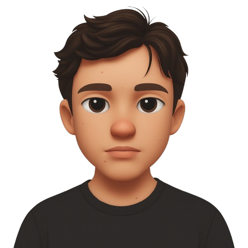

Gian Federspiel
SAP Software Developer
About Me
📍Lucerne, Switzerland 📅06 August 2004
Junior Software Developer with a Federal Diploma in Application Development and hands-on experience in SAP development and agile environments. I take a structured, solution-oriented approach and communicate confidently with a wide range of stakeholders. I will soon begin studying International IT Management to build a strong foundation for future roles in project coordination and IT leadership.
Work Experience
SAP Application Developer – Suva (from 08/2025)
- Independently managed and implemented an internal development project
- Coordinated with internal stakeholders and departments
- Contributed to migration from SAP CRM to S/4HANA
Apprentice Software Developer – Suva (08/2020 – 07/2024)
- Co-developed and maintained SAP web apps using SAPUI5
- Implemented REST-based services
- Worked independently and in agile teams using Scrum and SAFe
Education
- Bachelor Studies International IT Management – HSLU (from 09/2025)
- Vocational School for Application Development – BBZ Sursee (08/2020 – 07/2024)
- Federal Vocational Baccalaureate in Technology – BBZ Lucerne
Projects
Training Certificate Management Platform
- Redesigned and rebuilt a legacy SAP application suite for a modern S/4HANA environment.
- Enabled course providers to submit candidate records for review.
- Internal teams could manage approvals and trigger the issuance of operator IDs.
- Solution included billing workflows and overview apps for managing crane operator records and IDs.
- Improved usability and operational efficiency.
Skills & Languages
- HTML, CSS, JavaScript
- SAPUI5, SAP CRM, S/4HANA
- Agile (Scrum, SAFe)
- German (Native)
- English (B2)